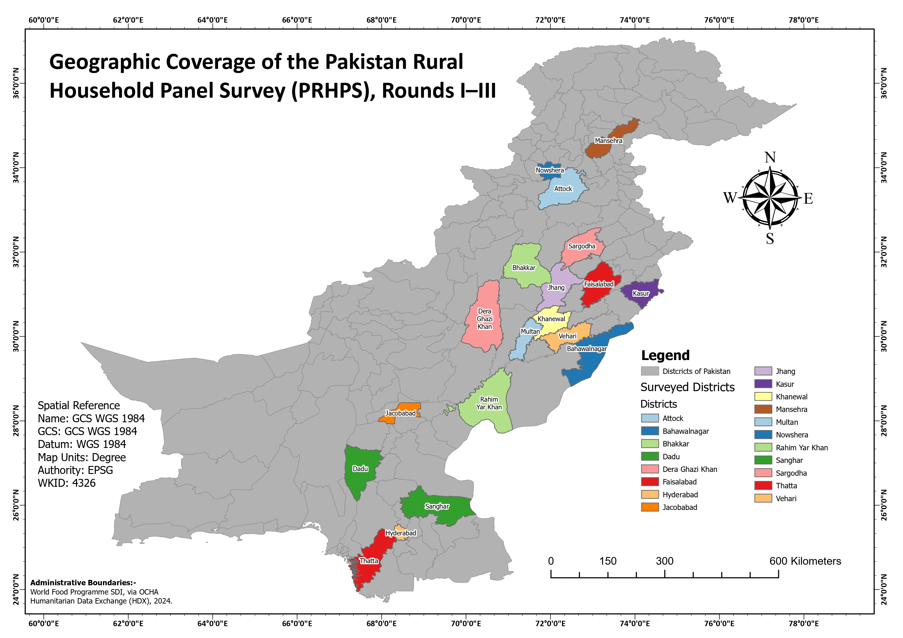

What this map was made for
The purpose of this map was to show where the Pakistan Rural Household Panel Survey was conducted. Survey datasets are often listed in tables, but a district list does not immediately show the geographic spread of the sample. By mapping the surveyed districts, I wanted to make the survey coverage easier to understand.
This type of map is useful for reports, research papers, survey documentation, and presentations because it quickly communicates where the data came from. It helps the viewer understand the regional distribution of the PRHPS sample instead of reading the coverage only as a list of district names.
What data I used
I used district-level administrative boundary data for Pakistan as the main base layer. The full district framework is shown in grey so the surveyed districts can be understood in national context. The surveyed PRHPS districts are highlighted with separate colors and labeled by name.
The map includes districts such as Attock, Bahawalnagar, Bhakkar, Dadu, Dera Ghazi Khan, Faisalabad, Hyderabad, Jacobabad, Jhang, Kasur, Khanewal, Mansehra, Multan, Nowshera, Rahim Yar Khan, Sanghar, Sargodha, Thatta, and Vehari.
How I created the survey coverage layer
I started with the Pakistan district boundary layer and selected the districts included in PRHPS Rounds I–III from the attribute table. After identifying the surveyed districts, I symbolized them separately from the rest of Pakistan's districts. This allowed the surveyed areas to stand out while still keeping the national district framework visible.
I also labeled each surveyed district so the map could be read without needing to cross-check the legend constantly. The final layout includes a legend, graticule coordinates, spatial reference information, a scale bar, a north arrow, and a source note for the administrative boundary data.
Why I included coordinate system information
I included the spatial reference information because this map is meant to work as a formal research and documentation product. The map uses GCS WGS 1984, with map units in degrees and EPSG/WKID 4326. Including this information helps make the map more transparent and reproducible for anyone using it in a GIS workflow.
The graticule around the map also supports geographic orientation. It helps viewers see the surveyed districts in relation to Pakistan's broader latitude and longitude extent.
How I designed the map
The design is intentionally formal and report-oriented. I used neutral grey for all non-surveyed districts so they provide national context without competing with the main message. The surveyed districts use bright contrasting colors so each district can be visually separated and quickly identified.
The title is placed prominently in the upper-left corner so the purpose of the map is clear immediately. The legend is placed on the right side near the highlighted districts, making it easier to connect the colors with the district names. Labels were added directly to the surveyed districts to make the map self-explanatory.
What the map shows
The map shows that PRHPS coverage is spread across multiple parts of Pakistan instead of being concentrated in a single region. Surveyed districts appear in Punjab, Sindh, Khyber Pakhtunkhwa, and northern areas. This gives the survey a wider geographic footprint and helps show the range of administrative areas included in the sample.
The map also shows that many surveyed districts are located in clusters, especially across parts of Punjab and Sindh. Seeing these patterns spatially is useful because it helps the reader understand where the survey is strong geographically and where coverage is less visible.
What I learned from this map
This project helped me understand the value of turning tabular survey information into a spatial product. A survey coverage table can tell which districts were included, but a map shows the geographic distribution, regional spread, and administrative context much more clearly.
I also improved my skills in administrative boundary mapping, attribute selection, district-level symbology, labeling, layout design, coordinate system documentation, and producing publication-style survey coverage maps.